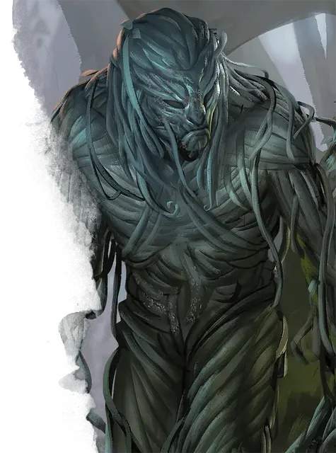

Вьющаяся зараза
Vine Blight
Среднее Растение, нейтрально-злое

Класс Доспеха 12 (природный доспех)
Хиты 26 (4к8 + 8)
Скорость 10 футов
| мод | спас | ||
|---|---|---|---|
| СИЛ | 15 | +2 | +2 |
| ЛОВ | 8 | −1 | −1 |
| ТЕЛ | 14 | +2 | +2 |
| мод | спас | ||
|---|---|---|---|
| ИНТ | 5 | −3 | −3 |
| МДР | 10 | +0 | +0 |
| ХАР | 3 | −4 | −4 |
Навыки Скрытность +1
Иммунитет к состояниям ослепление, глухота
Чувства слепое зрение 60 футов (слеп за пределами этого радиуса), пассивное Восприятие 10
Языки Общий
Опасность 1/2 (100 опыта)
Бонус мастерства +2
Среда обитания Лес
Особенности
Обманчивая внешность. Пока зараза остается без движения, она неотличима от клубка лиан.
Действия
Сжимание. Рукопашная атака оружием: +4 к попаданию, досягаемость 10 футов, одна цель. Попадание: Дробящий урон 9 (2к6 + 2), и если размер цели не больше Большого, она становится схваченной (Сл высвобождения 12). Пока цель схвачена, она опутана, и зараза не может сжимать другую цель.
Опутывающие растения (перезарядка 5–6). Цепкие корни и плети вырастают в 15-футовом радиусе вокруг заразы, засыхая через 1 минуту. В течение этого времени эта область является труднопроходимой местностью для существ, не являющихся растениями. Кроме того, все существа на выбор заразы, находящиеся в этой местности, когда растения только появляются, должны преуспеть в спасброске Силы Сл 12, иначе станут опутанными. Любое существо может действием совершить проверку Силы Сл 12, освобождая себя или другое опутанное существо при успехе.
Описание
Прикидываясь массой ползучих лиан, вьющаяся зараза скрывается в зарослях, ожидая приближающуюся добычу. Шевеля растения вокруг себя, эта зараза путает и сбивает с толку своих врагов, прежде чем атаковать.
Это единственная зараза, способная говорить. Благодаря связи со злым духом древа Галтиаса, которому он служит, зараза говорит надломленным голосом своего мёртвого господина, дразня своих жертв или ведя переговоры с более сильным противником.
См. дополнительно статью: "Бестиарий: Заразы"